Differential carrier ASSY RR (4WD) assembly |
| 1. Daiiferen Case Case ASSY installation |
Attach the thrust washer to the side gear.
Attach the side gear (with washer), pinoon, pinion shaft and pinoon thrust washer.
Attach the dial gauge at a right angle to the side gear surface.
Fix the pinion to the differential case and measure the side gear backlash.
Select and adjust the same size slast washer on both the left and right sides so that the backlash of the side gear is within the reference value and turns smoothly.
| Part number | Thick [mm] |
|---|---|
| 41361-12010 | 1.48-1. 52 |
| 41361-12020 | 1. 53-1. 57 |
| 41361-12030 | 1. 58-1. 62 |
| 41361-12040 | 1. 63-1. 67 |
| 41361-12050 | 1. 68-1. 72 |
| 41361-1 12060 | 1. 73-1. 77 |
| 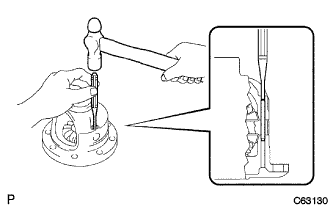 |
Use a ping -punch and a hammer to driven a pinion shaft pin from the dental surface of the deferral ring gear.
| 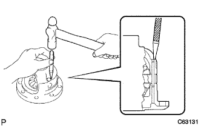 |
Use a punch and a hammer to make a rearing perforated case in the rear dial case case.
| 2. Daiiferen Syhal Ring Gear Mounting |
A sufficiently cleaned fats and fats on the differential ring gear of the rear dialogical case.
| 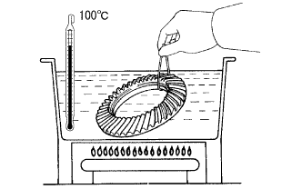 |
Heat a differential ring gear to 100 ° C with boiling water.
Combine the combination of the rear differential case and the deferral ring gear to quickly attach the differential ring gear.
Tighten the eight bolts.
| 3. Rear dialogical case bearing installation |
| 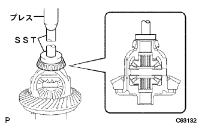 |
Use SST and press to press the bearing RH into a rear dialogue case.
| 4. Rear Differical Case Bearing Installation |
| 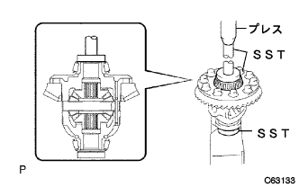 |
Use SST and press to press the bearing LH into a rear dialogue case.
| 5. |
Attach the rear dialogue case to the rear farquerary carrier, and attach the thrust shim to the extent that there is no backlash in the bearing.
With two bolts, attach the left and right bearing caps.
 |
Attach the dial gauge at a right angle to the back of the differential ring gear and check the swing of the ring gear.
Remove the four bolts and attach two bearing caps and rear dialogical cases.
| 6. Installation of front bearing otalace |
| 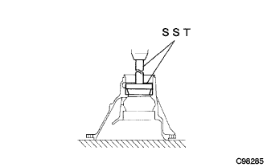 |
Use SST and press to press the rear drive pinion taper roller bearing FR Out race.
| 7. Rena bearing outerace installation |
| 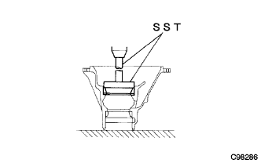 |
Use SST and press to press the same thick pinoon washer (new) and rear drive pinion tap roller bearing RR Outrace.
| 8. Rear Drive Pinion Tapered Drawler Bearing RR Installation |
| 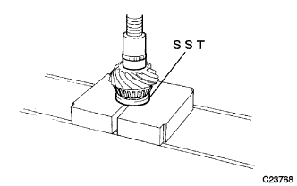 |
Use SST and press to press the rear drive pinion tap doroller bearing RR into the deferral drive pinion.
| 9. Daiferen Syardyald Live Pinnion Preload Adjustment |
Differential driving pinion and rear drive pinion tapped roller bearing FR are installed to the rear dialogical carrier.
Attach the rear drive pinio oil slinga.
| 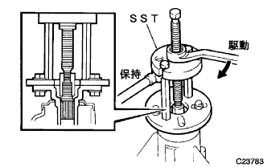 |
Use SST to attach a rear drive pinion companion flange RR.
Apply a high pooid gear oil LSD to the screw of the new rear drive pino nut nut.
| 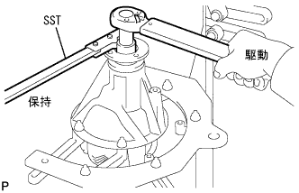 |
Use SST to fix the rear drive pinion flange RR, and use a deep socket wrench (24mm) and a torque wrench to tighten the new rear drive pinnion nuts into the prescribed plaord.
 |
Inspect the starting torque of the differential drive pinion.
| 10. Rear Differential Case SUB-ASSY installation |
Attach a bearing outer race to the case bearing (side bearing).
Attach the rear dialogue case to the rear falential carrier.
| 11. Deiferen Syaling Gear Batsukuratsushi Adjustment |
Attach the dial gauge at a right angle to the tip of the teeth of the differential ring gear.
On the back side of the differential ring gear, select and attach a slast shim where the backlash of the differential ring gear is almost within the reference value.
| Part number | Thick [mm] | Identification mark |
|---|---|---|
| 90564-51035 | 2.51-2. 53 | 52 |
| 90564-51036 | 2.54-2. 56 | 55 |
| 90564-51037 | 2.57-2. 59 | 58 |
| 90564-51038 | 2.60-2. 62 | 61 |
| 90564-51001 | 2. 63-2. 65 | 64 |
| 90564-51002 | 2. 66-2. 68 | 67 |
| 90564-51003 | 2. 69-2. 71 | 70 |
| 90564-51004 | 2.72-2. 74 | 73 |
| 90564-51005 | 2.75-2. 77 | 76 |
| 90564-51006 | 2.78-2.80 | 79 |
| 90564-51007 | 2.81-2.83 | 82 |
| 90564-51008 | 2.84-2.86 | 85 |
| 90564-51009 | 2.87-2.89 | 88 |
| 90564-51010 | 2.90-2. 92 | 91 |
| 90564-51011 | 2.93-2. 95 | 94 |
| 90564-51012 | 2.96-2.98 | 97 |
| 90564-51013 | 2.99-3.01 | 00 |
| 90564-51014 | 3.02-3.04 | 03 |
| 90564-51015 | 3.05-3.07 | 06 |
| 90564-51016 | 3.008-3.10 | 09 |
| 90564-51017 | 3.11-3.13 | 12 |
| 90564-51018 | 3.14-3.16 | 15 |
| 90564-51019 | 3.17-3. 19 | 18 |
| 90564-51020 | 3.20-3.22 | 21 |
| 90564-51021 | 3.23-3.25 | 24 |
| 90564-51022 | 3.26-3.28 | 27 |
| 90564-51023 | 3.29-3.31 | 30 |
| 90564-51024 | 3.32-3.34 | 33 |
| 90564-51025 | 3.35-3.37 | 36 |
| 90564-51026 | 3.38-3.40 | 39 |
| 90564-51027 | 3.41-3. 43 | 42 |
Use a plastic hammer to lightly hit the ring gear and calm the bearing and thrust shim.
Fix the rear drive pinion companion flange, move the ring gear and check the backlash.
In the case of outside the reference value, select a slast shim so that the backlash of the differential ring gear is near the reference value and attach it to the back side of the differential ring gear.
The side bearing outer lace on the surface side side and the gap between the carrier on the tooth surface side are 0 mm or the thickest slast shim, which is close to 0 mm.
Use a plastic hammer to lightly hit the differential ring gear and calm the bearing sufficiently.
 |
The dial gauge is applied at a right angle to the tip of the ring gear to the tip of the tooth gear, fix the rear drive pinion companion flange RR, move the differential ring gear to check the backlash.
In the case of outside the reference value, the thickness of the left and right slast shim is increased or decreased by gradually.
| 12. Differential side bearing pre -road adjustment |
After adjusting the backlash of the differential ring gear, remove the slast shim on the differential ring gear surface.
Use a micrometer to measure the thickness of the removed slastim.
Select 0.06-0.09mm thick slastim from the removed thrust synth.
| 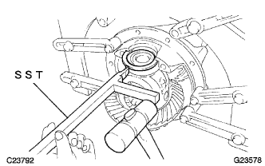 |
Use SST and hammer to driven a thrust shim.
Match the bearing cap and the deferency carrier to attach the bearing cap.
With two bolts, tighten the left and right bearing caps.
|
The dial gauge is applied to the tip of the teeth of the differential gear gear, fix the rear drive pinion companion flange RR, move the differential ring gear to check the backlash.
In the case of outside the reference value, the thickness of the left and right slast shim is increased or decreased by one by one to a reference value.
| 13. Comprehensive pledo measurement |
|
Use a torque wrench and a deep socket wrench (24mm) to check the startup torque with a differential driving pinion and a differential ring gear.
| 14. Daiferen Syaling Gear and Drive Pinion Inspection of teeth |
Differential ring gear of gears are applied thinly and uniformly on both sides of the tooth surface, and the differential ring gear is turned or reverse several times.
In the case of the face, the following tasks are performed.
Select a side gear shaft thickness of the left and right side gear shaft beshers, and attach the rear farquer case bearing otter lace.(*1)
Re -check the teeth of the differential ring gear and the differential drive pinion.
Re -check backlash for differential ring gears and deferency driving pinion.
In the case of a heel or to the toe, perform the following work.
| 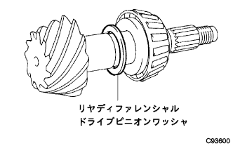 |
Re -form the Rear Farchangal Drive Pinion Washer is selected again and the rear drive pinion tap dorolla bearing RR is installed.
| Part number | Thick [mm] | Identification mark |
|---|---|---|
| 90564-59026 | 2.25-2.27 | a |
| 90564-59027 | 2.27-2.29 | B |
| 90564-59028 | 2.29-2.31 | C |
| 90564-59029 | 2.31-2.33 | D |
| 90564-59030 | 2.33-2.35 | picture |
| 90564-59031 | 2.35-2.37 | F |
| 90564-59032 | 2.37-2.39 | G |
| 90564-59033 | 2.39-2. 41 | H |
| 90564-59034 | 2.41-2.43 | J |
| 90564-59035 | 2.43-2.45 | K |
| 90564-59036 | 2.45-2.47 | L |
| 90564-59037 | 2.47-2.49 | M |
| 90564-59038 | 2.49-2. 51 | yeah |
| 90564-59039 | 2.51-2. 53 | P |
| 90564-59040 | 2.53-2. 55 | Q |
| 90564-59041 | 2.55-2. 57 | R |
| 90564-59042 | 2.57-2. 59 | S |
| 90564-59043 | 2. 59-2. 61 | T |
Restore the tasks from deferency Drive Pinnion Preload Adjustment to Different Ring Gear and Different Drive Pinion.
| 15. Remove the rear drive pinion nut |
| 16. Rear Drive Pinion Companion Flange RR removed |
| 17. Remove the rear dialable drive pinion oil slinga |
| 18. Rear Drive Pinion Taper Drawler Bearing FR removed |
 |
Use SST to remove the tapered roller bearing FR from the differential carrier.
| 19. Rear Differential Drive Pinion Bearing Spacer Mounting |
Attach a new spacer to the rear dialable drive pinion.
| 20. Rear Drive Pinion Taper Drawler Bearing FR Installation |
| 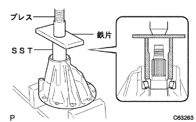 |
Use SST, iron pieces and press to press the rear drive pinion tap roller bearing FR.
| 21. Rear Differential Drive Pinion Oil Singa Mounting |
| 22. Rear Differential Career Oil Seal Installation |
Apply MP grease No.2 to the new rear dialogical carrier oil lip part.
| 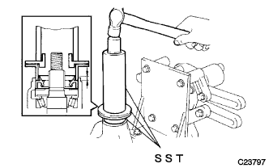 |
Use SST and hammer to launch a new rear dialy carrier oil seal.
| 23. Lear Dust Dust Dust Note Mounting |
| 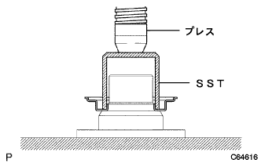 |
Use SST and press to press a new rear dust dust deflector.
| 24. Rear Drive Pinion Companion Flange RR installation |
| 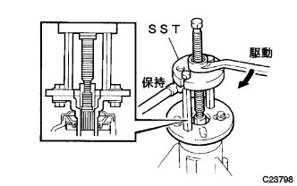 |
Use SST to attach a rear drive pinion companion flange RR.
Apply a high pooid gear oil LSD to the screw of the new rear drive pino nut nut.
Use SST to fix the rear drive pinion companion flange RR, and tighten the new rear drive pinnio nut using a deep socket wrench (24mm) and a torque wrench while checking the pre -road.
| 25.Deifalen Syardyald Live Pinnion Preload Inspection |
Use a torque wrench to inspect the startup torque within the range of the backlash of the deferral drive pinion and the differential ring gear.
If the pre -road is overcharged, replace the bearing spacer.
If the pre-road is insufficient, tighten the rear drive pino nut by 5-10 °, check the pre-load, and adjust it to the reference value repeatedly.
If the rear -drive pinio nut torque of the rear drive pino nut exceeds the limit (235N · m {2400kgf · cm}), if the pre -road is insufficient, relax the rear drive pino nut once, the rear drive pinion nut and the deferragram driving pinoon twist.Inspect if it is crushed.
If there is no abnormality, replace the spacer, apply a high pooid gear oil LSD to the screw, and then repeat the work.
Record the pre -road for comprehensive pledo inspection.
| 26. Comprehensive pledo inspection |
|
Use a torque wrench to inspect the startup torque with a differential drive pinion and a differential ring gear surface.
| 27. |
| 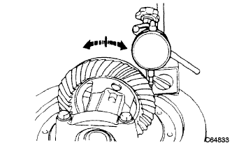 |
The dial gauge is applied at a right angle to the tip of the differential ring gear to the tip of the teeth, fixing the rear -drive pinion flange RR of the differential driving pinion, and moves the differential ring gear to inspect it.
| 28. Rear Drive Pinion Companion Flange RR Swing Inspection |
 |
The dial gauge is mounted on a right angle to the inner peripheral surface of the rear drive pinion companion flange RR to measure the vertical shake of the rear drive pinion companion flange RR.
The dial gauge is mounted at a right angle at the position of the rear driving pinion companion flange surface to measure the side swing of the rear drive pinion companion flange RR.
| 29. Lear Drive Pinion Nut Mounting |
| 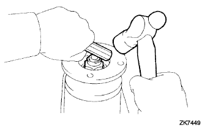 |
Use tagane and hammer to make a rear drive pino nut.